I design clean, user‑focused, and visually engaging
websites that balance strong aesthetics with practical usability. With a background in Multimedia Computing,
I combine creative design principles with technical skills in front‑end development and WordPress to build digital
experiences that are both intuitive and functional. I pay close attention to detail and usability, ensuring every
interface feels purposeful and seamless. I am currently seeking an internship where I can contribute to real projects,
strengthen my web design and development skills, and continue growing as a digital creator.
01
About Me
Design is My Calling
I am Syahirah Nabiha Binti Mohd Yazid, a motivated Computer Science student with a strong interest in web design,
interactive media, and user‑focused digital experiences. With a background in Multimedia Computing,
I combine creativity with technical skills to design clean, functional, and visually engaging interfaces.
I am currently seeking an internship opportunity where I can contribute to real projects, strengthen my design and development abilities, and continue growing as a future web and multimedia professional.
Teamwork — Able to collaborate effectively across different roles and disciplines to achieve shared project goals.
Communication — Skilled in presenting ideas clearly, sharing feedback constructively, and adapting communication to different audiences.
Problem solving — Approaches challenges with analytical thinking and creativity to find practical, user‑centered solutions.
Adaptability — Quick to learn new tools, technologies, and workflows, especially in fast‑paced project environments.
Creativity — Brings fresh ideas and strong visual sense to design tasks, ensuring engaging and meaningful user experiences.
02
My Projects
Web Development-Wordress
Click to see more details about my web development projects.
Web Development-EzShop
Click to see more details
Game Development - Carbon City Matchup
Click to see more details about my game development projects.
FYP Project - ASSETFLOW: AI-POWERED WEB-BASED ASSET MANAGEMENT USING OCR
Click to see more details about my FYP project.
System Testing
Click to see more details about my system testing projects.
Photography
Click to see more details about my photography projects.
×
Web Development
The TenAsia company website was designed to provide a modern, user-friendly experience that effectively showcases the company's services and projects. The design focuses on clean aesthetics, intuitive navigation, and responsive functionality to ensure accessibility across all devices.
Technologies Used: WordPress.com
Role and Contributions: Lead Developer - Designed the UI/UX, implemented responsive design, and integrated backend functionalities.
Challenges and Solutions: Ensuring cross-browser compatibility was a challenge. I used extensive testing and CSS resets to achieve consistent behavior across different browsers.
×
EzShop
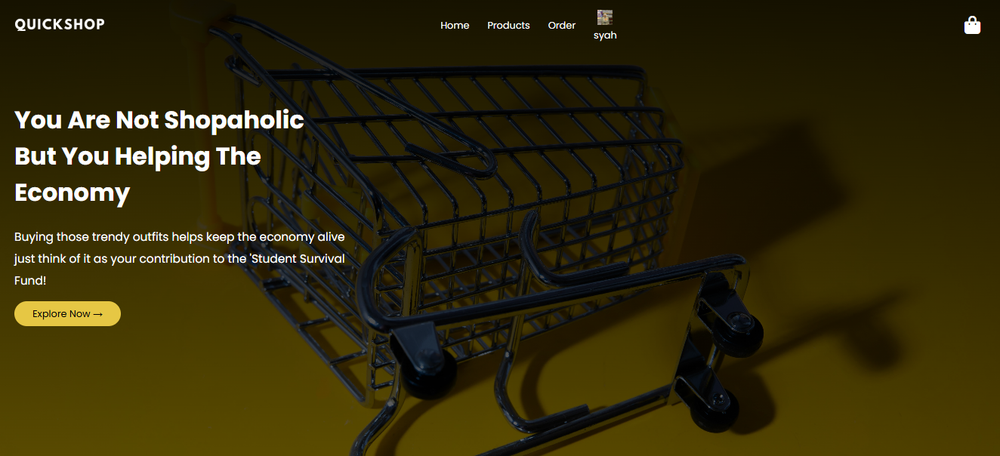
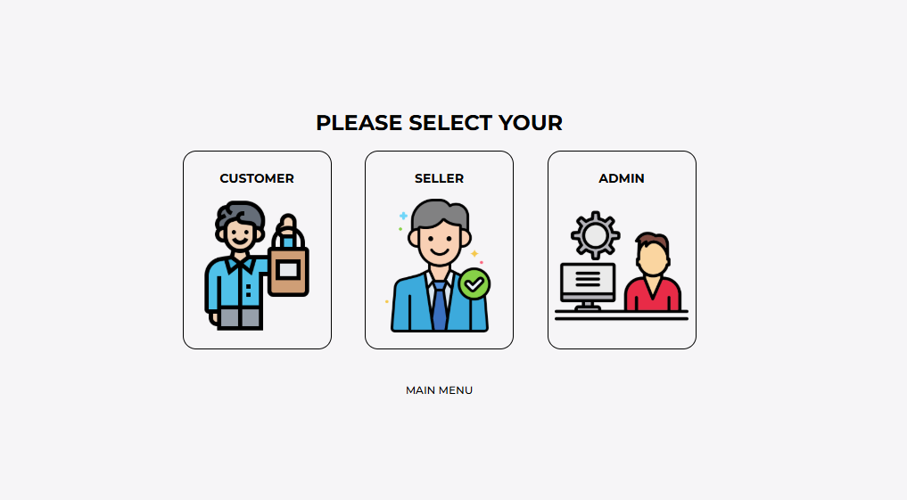
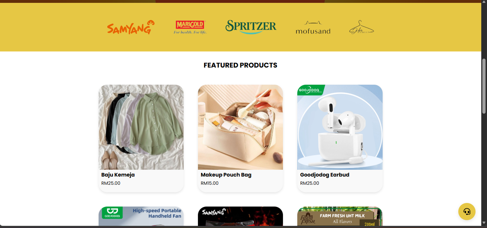
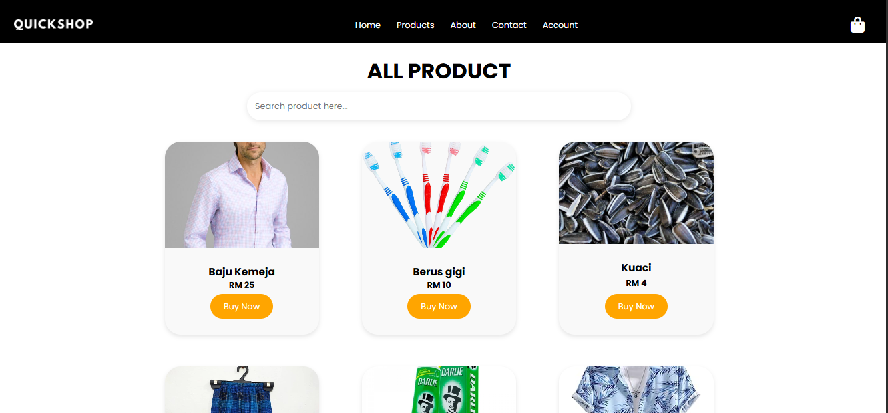
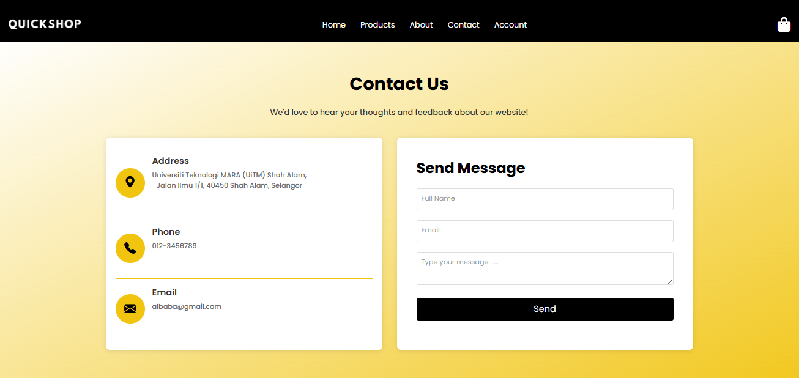
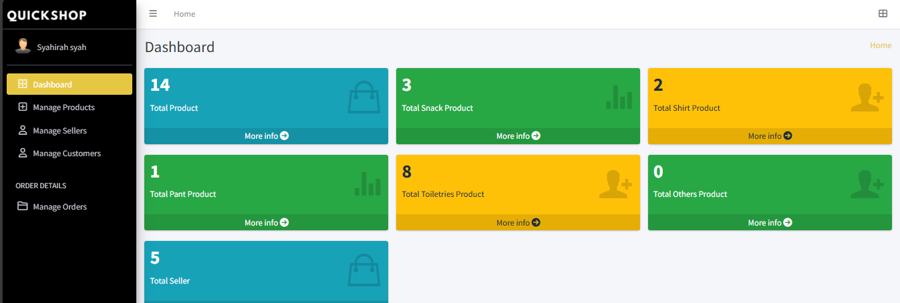
The project started with a clear understanding of the needs of UiTM students who frequently buy and sell items on campus. I analyzed existing student-to-student marketplaces and identified gaps such as trust, convenience, and the lack of a platform tailored specifically for the UiTM community. From there, I designed the system flow, user interface, and database structure to ensure a smooth and secure buying and selling experience. Early prototypes were tested with students, and their feedback guided refinements in navigation, product listing flow, and payment handling
Role and Contributions: Developer & System Designer — Built the full QuickShop platform, designed the database, implemented secure user authentication, developed product listing and search features.
Challenges and Solutions: challenge was creating a payment method that felt safe and convenient for students. The QR payment system was introduced to allow fast, cashless transactions without requiring complex payment gateways. Continuous testing with students helped refine the user experience and ensure the platform met their expectations.
×
Carbon Scity Matchup
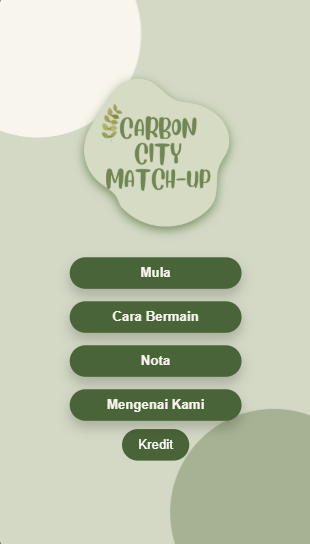
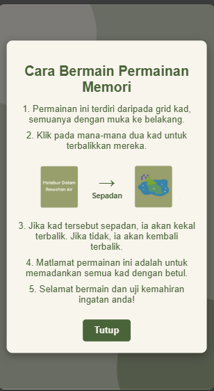
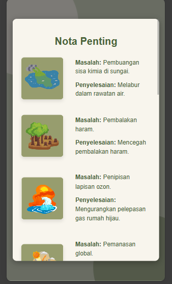
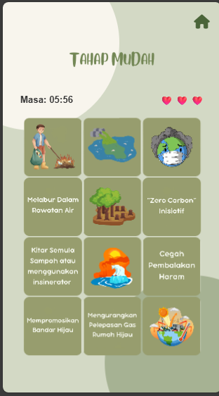
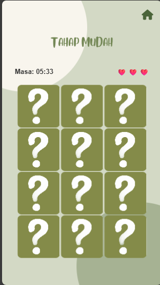
The project focused on creating an engaging and educational matching card game centered on environmental awareness. It began with discussions and planning sessions involving another faculty and their FYP students to understand their learning objectives, target audience, and the environmental themes they wanted to highlight. I researched existing educational games, identified mechanics that work well for young learners, and designed a game flow that balances fun with meaningful learning. Early prototypes were tested with children, and their reactions helped refine the difficulty level, visuals, and pacing of the game.
Technologies Used: HTML/CSS, JavaScript, simple animation libraries, graphic assets for environmental icons and illustrations
Role and Contributions:Game Developer & Designer — Developed the full matching card game mechanics, designed the user interface, created or adapted environmental-themed card illustrations, and ensured the gameplay remained both educational and enjoyable. Collaborated closely with the partnering faculty to align the game content with their environmental education goals.
Challenges and Solutions: Making the game educational without feeling too “text-heavy” was challenging. I solved this by using visual cues, icons, and short prompts that teach environmental concepts through play rather than long explanations.
×
ASSETFLOW: AI-POWERED WEB-BASED ASSET MANAGEMENT USING OCR
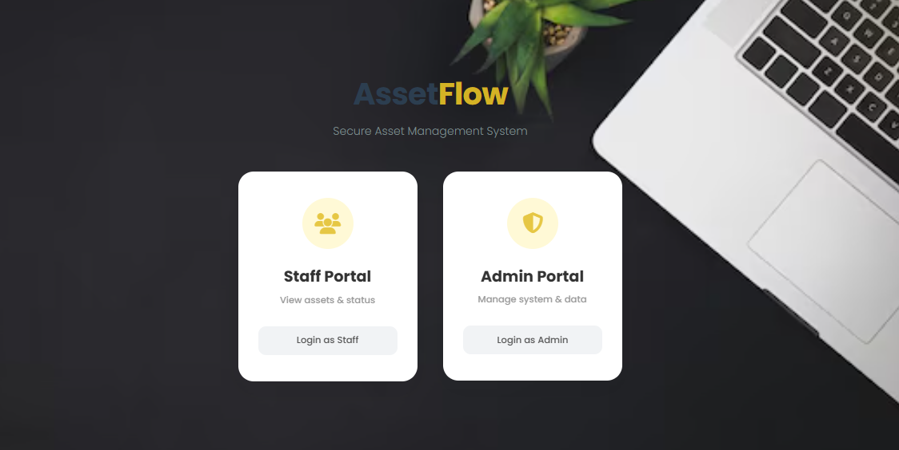
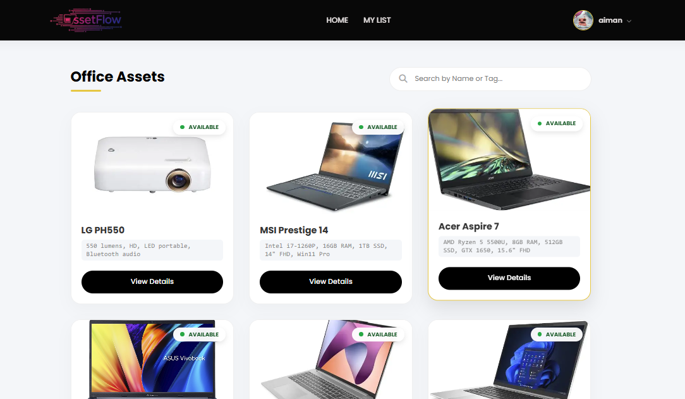
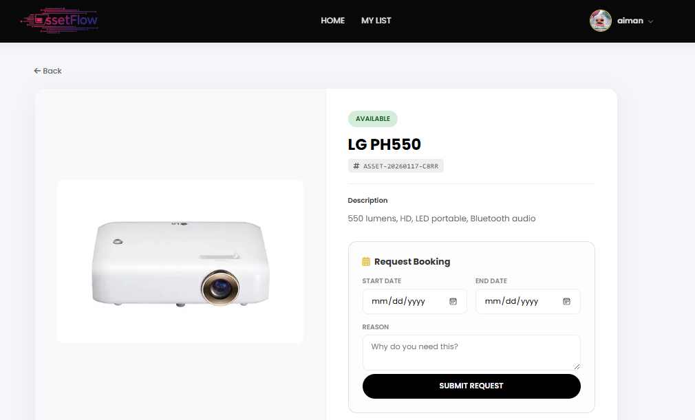
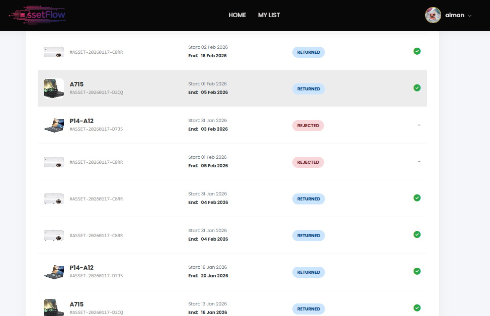
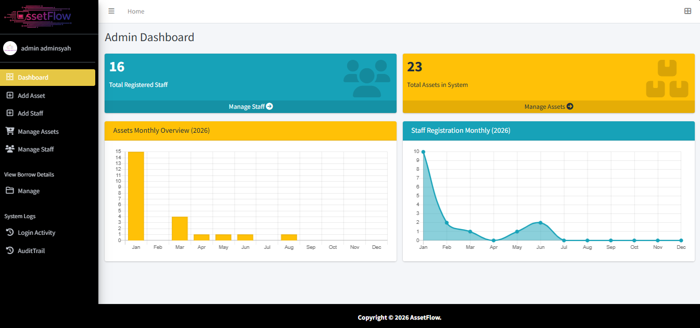
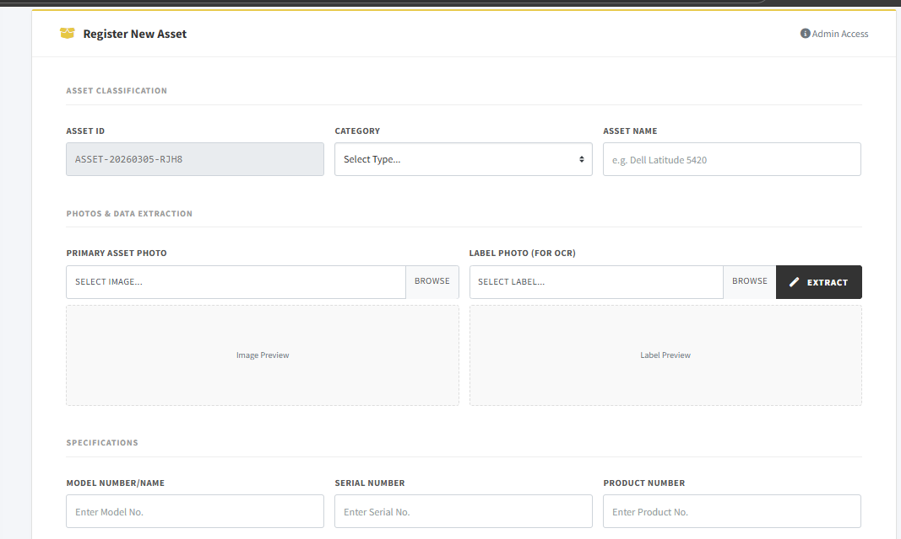
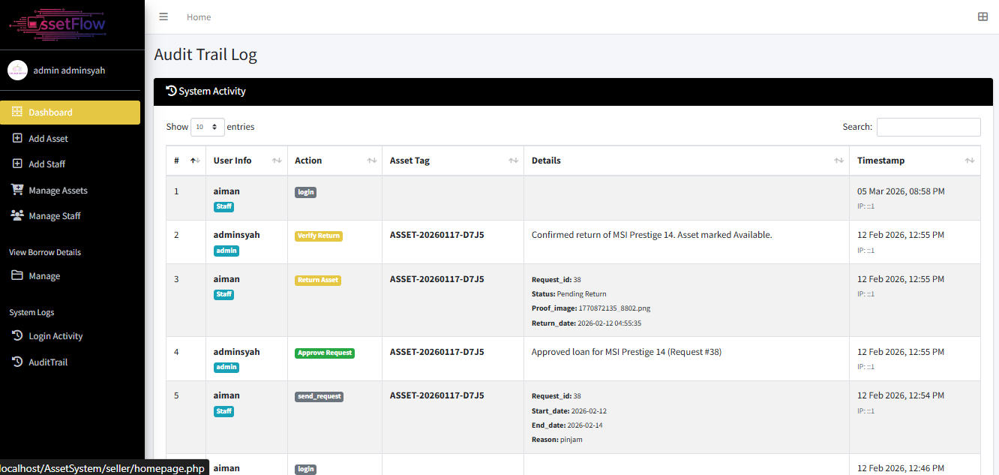
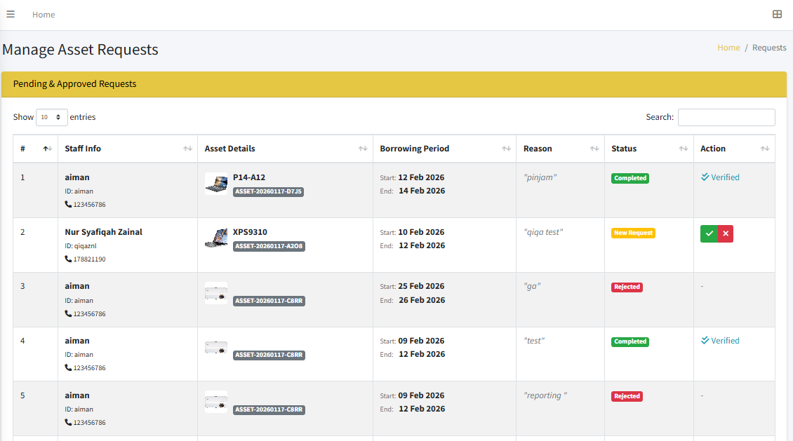
The project focused on developing ASSETFLOW, an AI‑powered, web‑based asset management system designed to automate and simplify the process of tracking, recording, and verifying organizational assets. The development began with identifying common issues in traditional asset management workflows, such as manual data entry, inconsistent documentation, and time‑consuming verification. I designed the system architecture, built the OCR pipeline, and created an intuitive interface that allows users to scan asset labels or documents and instantly extract key information. Through iterative testing with real asset samples, the OCR accuracy and data validation processes were continuously refined to ensure reliable performance.
Role and Contributions: System Developer & AI Integration Lead — Designed and implemented the complete ASSETFLOW system, including the OCR engine powered by Tesseract, automated data extraction workflows, asset registration modules, and the administrative dashboard. Developed preprocessing methods to enhance OCR accuracy, structured the database for efficient asset tracking, and ensured a smooth user experience from scanning to verification
Challenges and Solutions: Achieving consistent OCR accuracy was challenging due to variations in lighting, image clarity, and label formats. This was improved through preprocessing techniques such as thresholding, noise reduction, resizing, and contrast adjustments before sending images to Tesseract.
×
System Testing
The testing process involved executing test cases, logging defects, and retesting after fixes were applied. Regular test reports were generated to keep stakeholders informed of the testing progress and results.
Technologies Used: Microsoft Excel
Role and Contributions: Involved with the QA team - Developed test plans, executed test cases, and reported defects.
Challenges and Solutions: Ensuring comprehensive test coverage was challenging. Automated testing scripts and thorough manual testing helped achieve this.
×
Photography
The final collection includes a variety of shots, each capturing a different aspect of the model. From wide-angle landscapes to intimate close-ups, the photos showcase a range of perspectives and styles.
Technologies Used: DSLR Camera, Adobe Lightroom
Role and Contributions: Photographer - Planned and executed photo shoots, edited photos, and curated the final collection.
Challenges and Solutions: Capturing the right lighting was challenging. Using reflectors and adjusting camera settings helped achieve the desired effect.
Contact Me
Contact Me
I’m always eager to learn, grow, and contribute to meaningful projects. As a student actively building my skills in
web design and development, I’m excited to collaborate with teams, explore new tools, and take on challenges that
help me improve. If you’re looking for an intern who is motivated, adaptable, and passionate about creating
user‑friendly digital experiences, I’d be glad to connect and learn from real industry environments.